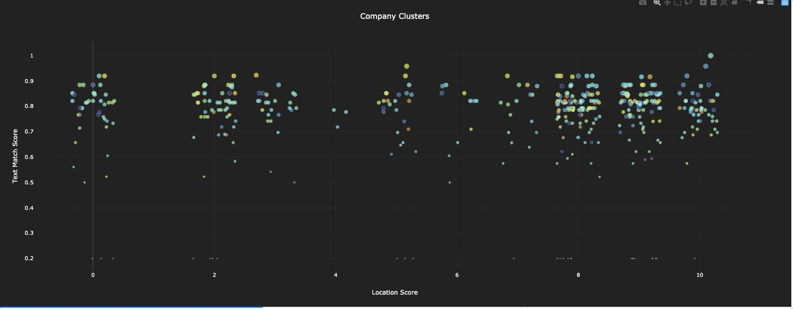
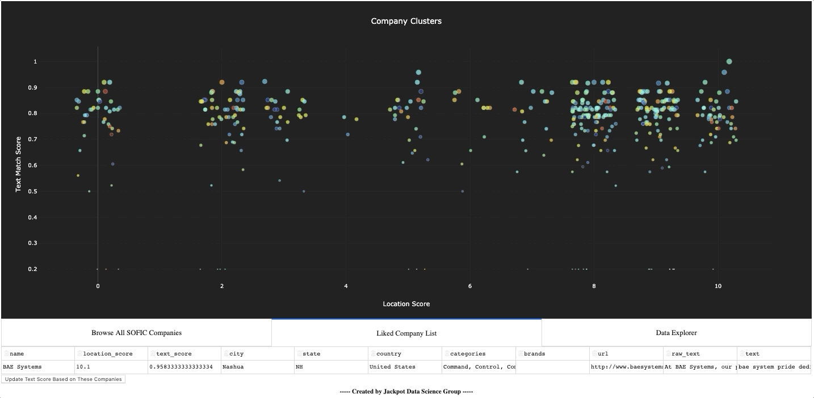
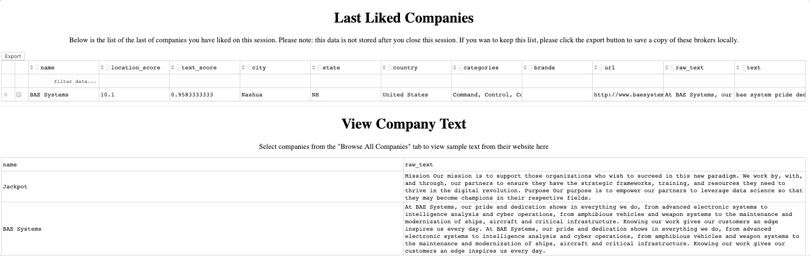

Bottom Line Up Front
The value of data, and the capability to effectively use it, has been steadily increasing over the last two decades. Businesses and governments are rethinking traditional ways of operating in favor of more ‘data driven’ approaches. But I’ve observed that the term data driven is widely misunderstood. Too often, businesses are citing they are 'data-driven' because they use data to quantity their intuition and personal experience. This method for using data is backwards. By using data exclusively to quantify what an individual already knows, there is a high risk of missing opportunities and creating confirmation bias. In this post and video demo, I provide my take on what it really is to be ‘data driven’. In doing so, I will show a page out of my own playbook: how I use data to shape business development strategy.
My Take on Being Data Driven
Being data driven means being compelled by data. Yes - it’s that simple.
But as the saying goes, it’s the simple things that confound the wise. Perhaps this is why so many businesses struggle to get this right. More often than not, businesses do, indeed, have a ‘data strategy’ in place to inform decisions and guide operations. But frequently they are using data in the wrong part of the decision and operations cycles; they are using data behind the human. To clarify this point, consider this hypothetical, but extremely common, example about a private banker:
Meet Bob. Bob is a private banker (he helps high net worth individuals manage their money). He makes his living based on the amount of money he is managing on behalf of his clients. He is therefore always looking to meet new clients. He usually does so through referrals and professional events, though occasionally he will find a dataset from a conference, networking event, etc. When he meets a perspective client, he documents their exchange, but he mostly relies on his experience to shape his initial approach.
As a private banker, Bob clearly has a mind for numbers. So he recently hired a consulting firm to help him set up an analytics platform to leverage data related to his business development. They delivered, and now Bob has metrics to assess all kinds of things, ranging from simple stats on his perspective client’s assets to predictive models about which clients are likely to commit based on the interactions they have had to date.
The problem? Bob is using data only to quantify/improve what he was already doing! All the data, metrics, and models are behind Bob in his business development process. At best, his new platform can help him study and improve his sales approach. At worst, the platform will result in confirmation bias. But Bob won’t fundamentally transform his business by using data like this. To transform his business, he needs to put data in front of him in his processes. He should then use his intuition and experience to round out the data and take action.
In contrast, I’ll offer an example of how I've used data to guide business development for my startup. Admittedly, it feels showy and uncomfortable to use my startup as an example. But I am sick of seeing consulting firms who offer ‘thought-leadership’ on topics like this. Anyone can write a ‘though-leadership’ paper. But I'm a Marine; I believe in actual leadership – leadership by example.
So I’d humbly like to show you how my startup does business.
Context
The Special Operations Forces Industry Conference (SOFIC) is an annual expo/conference wherein Special Operations Forces (SOF) leaders connect with private industry on technical issues. My startup is exceedingly competitive in government work (especially within the DoD, SOF, and intelligence communities). Accordingly, we want to be connected to the SOFIC community.
The problem: there were over 400 companies at last year’s event. There will likely be more this year. We obviously did not have the time or resources to try to meaningfully connect with each and every one of these companies. We needed to let data drive our approach, and use our judgement to round out the data and take action.
Our Approach: Lead with data
Over the course of a day, we developed a data pipeline to scrape data on each of the companies who attended the SOFIC conference. We cleaned and structured that data, and build a tool for using natural language processing to see which of the firms most closely matches our engagement criteria. Overall, there were four parts to our approach:
-
Orient on the data
-
Build a data pipeline
-
Build an AI tool for using the data
-
Interpret the results and apply judgement
Part 1: Orient on the data
The first thing we did was super simple: take a look at the SOFIC website itself to see how we could use it to initiate a data pipeline. It turns out the SOFIC website is a treasure trove of information, which openly lists the names of all the attendees…

Looking at this website, a lot of people would actually just stop here. There is enough data on the SOFIC website that one could browse the attendees list, google each of the companies, review their sites and sketch out an engagement plan for each of these companies. It would be a laborious process, but at ~400 companies, it’s doable. This type of approach pains us, however, and not just because it is inconvenient.
Trying to google websites and make judgements call too soon results in confirmation bias and missed opportunities. Moreover, such manual processes don’t scale. Sure, someone could look up a list of 400 companies and see which ones they are interested in, but 4,000? 40,000? 400,000? At some point this doesn’t scale. So automating this for a simple list of 400 companies means we can also solve for list of 400,000, which is the real prize. (And fortunately for us, the government also openly releases great data on all of the hundreds of thousands of contracts it awards each year…)
Part 2: Build a data pipeline
Our next step was to build a spider to scrape SOFIC’s page and structure all the data from each of the attendees in a usable format. In doing so, it returned the following information in a neat, usable, tsv file:
a. Company name
b. Company country
c. Company state
d. Company city
e. The categories the company operates in (e.g. maintenance, ground mobility, etc.)
f. The brands associated to the company (e.g. Aimpoint, Air Tractor, etc.)
g. The company’s website
h. A basic (paragraph) description of the company
From here, we wrote another spider and scraped all of the companies websites and LinkedIn pages to return the info we had scraped about them to a consolidated file of raw, unstructured text. We added this text back into our table, and moved it to a Postgres database. As a result, our table had a new field:
i. Raw text
(Please see the post/demo on Spiders for a visual reference)
Next, we developed a simple algorithm for giving each of the companies a ‘location_score’ from 1-10 based on how easy it would be to get to their location (ten being the easiest for us – NYC). This allowed us to add another field to our database:
j. Location score
We then processed all of the raw text to make it usable for natural language processing algorithms, adding another field to our database:
k. Processed text
(Please see the post/demo on text clustering for a visual reference)
Part 3: Build an AI-powered tool for using the data
Once we had a scalable process for assembling and structuring data, we wrote an algorithm that used NLP to cluster each of the companies in our database based on a target company. In doing so, we assigned a text score for for each of the companies in relation to the target.
At this point, we had basically everything we needed to start ranking companies and shaping a ‘targeting list’ of companies we’d like to engage from the SOFIC conference. But allowing ourselves to stop here would be to develop a bad habit.
Most people are visual learners, so we don’t consider a job finished until there is a visual, palpable tool for engaging with the model. So to complete our work, we build an app for visualizing and working with all the data in one place. A demo video of the app is linked at the beginning of the paper, but a list of the features the app included is below.
Interactive visualization of all the firms, with live connection to the company’s location and text scores

An interactive, exportable, data table of all the companies in the database

A feature for ‘liking’ a company, or series of companies, to make them the ‘target’

A feature for previewing the text on each of the companies and exporting selected data

Part 4: Interpret the results and apply judgement
The final part of the process is, of course, to take action! In this case this means going through the results of our model and actually building the prioritized engagement list. To do so, we started by looking at the companies with the best text scores and location scores. If the company was new to us, we would use the text preview feature in our app to take a quick look to see what the company was all about and ensure they were indeed a good match. If so, we would append them to our list of firms to engage.
For example, here were a few of the firms identified by the AI algorithm as likely matches:
a. BAE systems
b. By Light Professional IT services
c. Owl Cyber Defense
d. CodeMettle
In contrast, here are some of the firms identified as poor matches by the AI algorithm:
a. Leupold
b. Glenair
c. ‘DHS – Countering Weapons of Mass Destruction’
d. The Green Beret Foundation
It is worth noting that a few of the firms NOT recommended by the AI algorithm actually struck a chord with us. The Green Beret Foundation, for instance, is surely a group we’d like to meet at some point. I have a SOF (MARSOC) background, so would love to connect with the Green Beret foundation. Yet there is little evidence to suggest that the Green Beret Foundation would actually be a good source of business for my firm, at least not in comparison to firms like BAE and By Light. This is why I stress putting data ahead of the user, not behind them.
Concluding Remarks
Everything we outlined here took about a day to complete, which is not much longer than it would have taken to have gone through the SOFIC website manually and sketch out a priorities list. The advantages from this data driven approach, however, are that it: